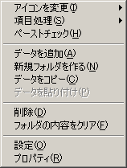

Charu3はキーボードで使いやすいように作られています。もちろんマウスでも一通りの操作は出来ますが、スピーディーに気持ちよく使うなら断然キーボードです。この章ではCharu3のメイン画面、ポップアップを快適に使いこなす為の情報を提供します。
 キーボードでの操作
キーボードでの操作
Charu3はキーボードでの操作を快適に行うために作りこまれています。
|
キー操作
|
動作
|
| カーソルキー上下 | 項目選択の移動。 |
| Shift + 上下キー | 次のフォルダに移動。フォルダ間をジャンプします。 |
| カーソルキー左右 | 親子フォルダへジャンプ。開閉。 |
| Shift + 左キー | 一番親のフォルダに飛びます。 |
| スペースキー | 項目選択を下に移動。 |
| Shift + スペースキー | 項目選択を上に移動。 |
| TABキー or スペース + Ctrl |
複数選択モードになります。これは一度なるとCharu3を再起動しないと消えません。チェックを付けた順に、複数の定型文を一度に貼り付けられる機能です。 |
| Enterキー | 決定。選択した項目をキャレット位置に貼りつけます。フォルダの場合は開閉します。 |
| Shift + Enterキー | 決定。ただし、ペーストは実行しません。クリップボードに選択したテキストを入れてポップアップを閉じます。キーボードマクロは展開されません。 |
| Deleteキー | 選択したアイテムを削除します。 |
| Alt or Appキー | テキストリストメニュー表示。 |
| F1キー | 選択アイテムの内容をツールチップに表示します。 |
| F2キー | 選択アイテムの名前を編集出来ます。 |
| F3キー | 次のアイテムを検索(検索条件を指定してある場合)。 |
| ESCキー or ホットキー |
ポップアップホットキー ウィンドウを閉じます。 |
| アルファベット 数字、記号キー |
タイトルが一致するものを選択します。例えば、Aを押せばタイトルの先頭がAのものを次々に選択します。 また、確定前(確定時間は設定できます)に次のキーを続けて押せば、更に検索を絞れます。クイックアクセス機能といいます。 データのタイトルの頭に「@a」などと付けて、「@a住所」とか「@lリンク」とかいうタイトルにします。そして、リストを出した状態で「@a」とタイプすると一発で「@a住所」へ飛びます。「@l」で「@lリンク」へ飛びます。 |
キーボード向けのソフトですが、マウスでも一通りの操作は出来ます。
|
マウス操作
|
動作
|
| 左クリック | 項目の選択。 |
| 右クリック | メニュー表示。 |
| ダブルクリック | 決定。選択した項目をキャレット位置に貼りつけます。 |
|
データにカーソルを合わせる |
テキスト項目の内容をツールチップに表示。 |
| ドラッグ＆ドロップ | 項目はマウスでドラッグ&ドロップして並べかえられます。 |
| 枠をドラッグ | ウィンドウのサイズを変えられます。 |
| ウィンドウの外をクリック | ウィンドウを閉じます。 |
登録アイテムには4種類あります。フォルダ、履歴フォルダ、ワンタイム項目とロック項目です。
Charu3は登録データをフォルダで管理することが出来ます。フォルダ中のデータの数などに制限はありません。
 履歴フォルダ
履歴フォルダ
クリップボードの履歴を自動的に取るフォルダです。フォルダなら「プロパティ」で「履歴フォルダとして使う」をチェックすれば履歴フォルダとして使うことが出来ます。最大履歴数や、履歴を保存するかしないか、付番するかしないか、などは「拡張マクロ」を書くことで設定できます。詳しくは「拡張マクロ」の説明を読んでください。
ワンタイム項目
ストックモードの時にクリップボードに入ったテキストはワンタイム項目として蓄積されます。これは一回貼り付けると消えてしまいます。
ロック項目
これが普通の定型文です。"テキスト項目追加"ダイアログで追加した項目はロック項目になります。ワンタイム項目をロック項目にする事もできます。ワンタイム項目と違って、何度貼り付けをしても消えることはありません。
よく見ると、アイコンの右上に赤い文字が見えると思います。これは、データの中身にマクロが使われているものです。全部で7種類あります。
D・・・日付系マクロ
E・・・シェル実行
R・・・関連付け実行
S・・・選択テキストマクロ
C・・・クリップボードマクロ
P・・・プラグイン
K・・・キー入力マクロ
 ポップアップメニュー
ポップアップメニュー
 ペーストチェック
ペーストチェック
複数貼り付けの為のチェックボックスを出します。チェックボックスはクリックすればチェックできます。
 データ追加
データ追加
新規
 プロパティ
プロパティ
データの内容を編集するウィンドウを開きます。マクロ、拡張マクロはテンプレートを用意してありますから、コンボボックスから選んで編集してください。
 検索
検索
データを検索できます。一度検索した後は、F3キーを押すと次の候補に飛びます。また、拡張マクロの内容も検索できますから、拡張マクロで設定したホットキーが判らなくなった時は、「Htokey」で検索すれば判ります。内容にチェックを入れれば拡張マクロ内も検索します。
 インポート
インポート
外部ファイルのデータをCharu3に取り込みます。取り込める形式はデータ互換プラグインに依存します。Charu3形式の場合はプラグイン無しでもインポート可能です。
 エクスポート
エクスポート
ポップアップで選択しているデータ(フォルダの場合はフォルダごと)を外部ファイルに書き出します。ただしこれはCharu3形式のみになります。オリジナルデータを配布したい場合などにどうぞ。
 フォルダをクリア
フォルダをクリア
選択しているフォルダ内のデータをクリアします。
 データをコピー&ペースト
データをコピー&ペースト
選択しているデータの複製を作れます。似たような感じなんだけど、ちょっと違うデータを複数作るときに便利です。
 データのプロパティ
データのプロパティ
各データの内容を編集できます。データ追加のダイアルログも殆ど使い方は同じです。下の例はデータの場合、フォルダの場合は「履歴フォルダとして使う」というチェックボックスがあります。

 名前
名前
データの名前を設定します。
 テキスト編集
テキスト編集
ここが貼り付ける定型文の本文です。マクロやキー入力マクロもここに記述します。
 マクロテンプレート
マクロテンプレート
マクロを全て自分で書くのは大変なので、テンプレートを用意しました。コンボボックスから選ぶと貼り付けられます。
 ファイル名貼り付け
ファイル名貼り付け
指定したファイルのフルパスを貼り付けることが出来ます。
 拡張マクロ
拡張マクロ
データの挙動を決めるマクロを記述できます。使えるマクロは、そのデータの種類によって変わります。
 拡張マクロテンプレート
拡張マクロテンプレート
拡張マクロのテンプレートです。自動的に使えるマクロだけが表示されます。選んだマクロが拡張マクロのボックスに貼り付けられます。
 種類、アイコン
種類、アイコン
データの種類と表示に使うアイコンを設定できます。普通は変えなくても良いと思いますけど。